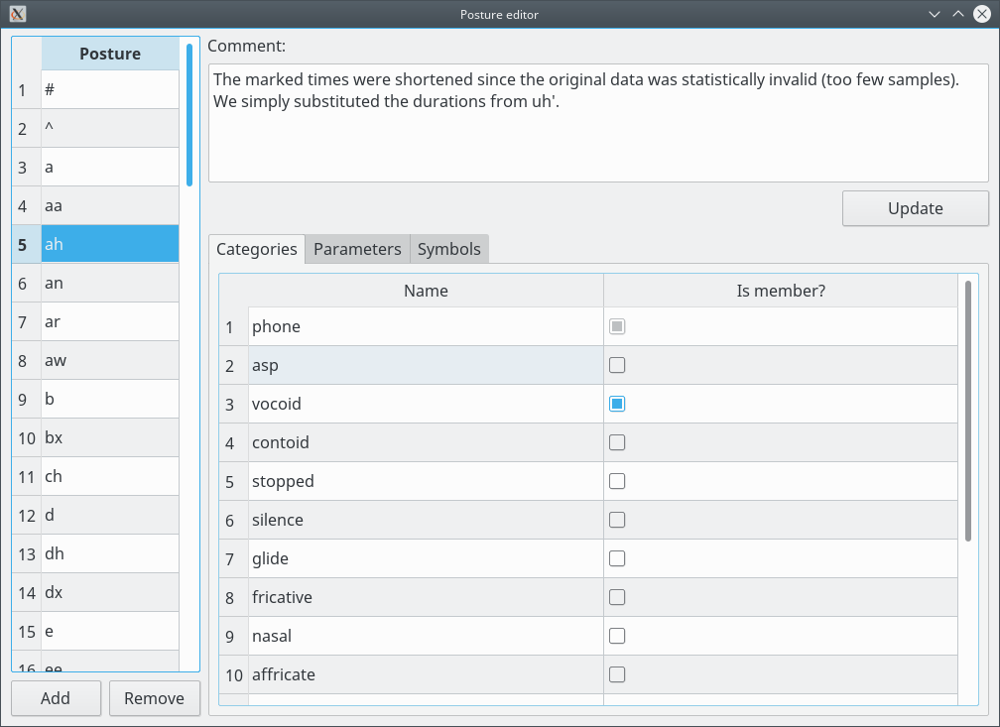

Posture editor - management and categories

The Categories are used to make filtering Postures easier.
Operations:
- Rename the Posture:
Double-click on the cell, change it and press ENTER. - Add a Posture:
Click on "Add". The name of the new item is "###new###". The Postures are sorted by the values of the code units (bytes) in the UTF-8 encoding. - Remove a Posture:
Select a line in the Posture list and click on "Remove". The "#" and "^" Postures must not be removed. - Add/change the comment:
Enter the text and click on "Update". - Add the Posture to a Category:
Select a line in the Categories table and check the checkbox in the "Is member?" column. Uncheck to remove the Posture from a Category. The Posture can not be removed from the "phone" Category.